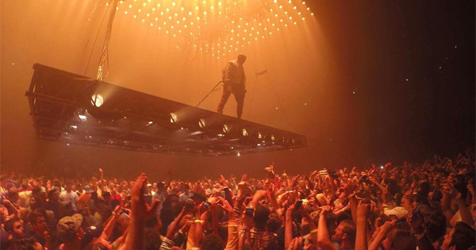

Kanye West
Inicio
Discografia
Tour
Galeria
Contacto
DISCOGRAFIA

Conocé y disfruta todos los discos de Kanye West
No te olvides de seguir a Kanye West en su cuenta de spotify si te gusto su musica!
Estos son sus discos mas conocidos